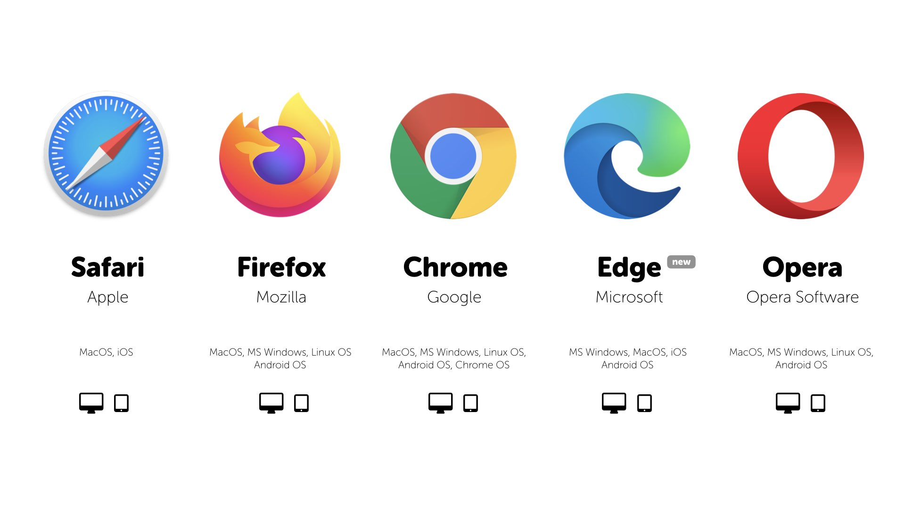

A web browser is a software application used to access and view websites on the internet. It interprets HTML, CSS, and JavaScript to display web pages.
Examples of web browsers include Google Chrome, Mozilla Firefox, Microsoft Edge, and Safari.
